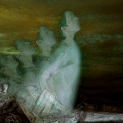

 Becoming the "Other"
Image by CDean
JC: In your opinion does VR have the potential for destabilizing the dynamics
of the "other," perhaps creating a simultaneous experience of
other-ness and self that could be perceived as both different and personally
identifiable?
BL: The "other" meaning the other viewer?
JC: The "other" meaning the other race, gender, or class...
BL: Ahh yes... So that can we use it in a politically or socially empathic
manner?
JC: Yes.
BL: Sure, if we can get somebody to do it! Let me see if I can think of
some examples...
The problem is that VR is not a narrative medium. If someone has to process
a narrative in order to understand what they're seeing, then you are asking
their brain to do two fairly different things at once, in a very significant
way... It's a question of experience
design to do the kind of thing you're talking about, which
seems more challenging as an artistic problem than a technical one.
(continued...)